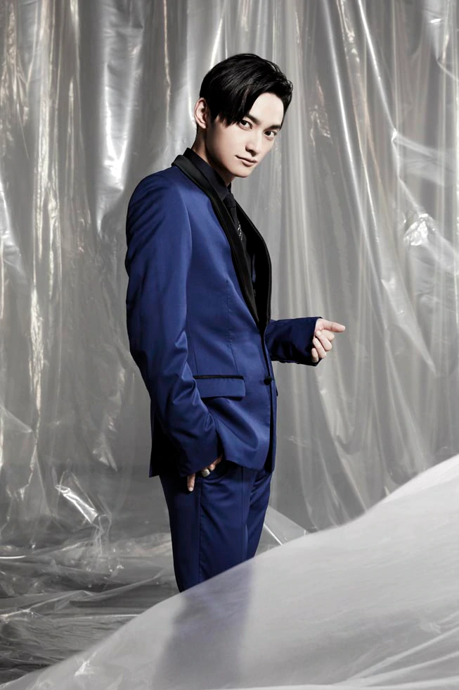

AAA（トリプル・エー）
男女混合パフォーマンスグループ。
2005年9月14日にシングル「BLOOD on FIRE」でデビュー。
2005年末、「第47回輝く！日本レコード大賞」最優秀新人賞受賞。
また、デビュー1周年にあたる2006年9月13日には初の日本武道館ライブを、
前代未聞の無料招待で行い、約1万人の動員を記録。
デビュー10周年となる2015年は、1月～7月まで7ヶ月SG連続リリース、
全国アリーナツアー「AAA ARENA TOUR 2015 10th Anniversary -Attack All Around-」、
自身初となるアジアツアー「WAKUWAKU JAPAN Presents AAA ASIA TOUR 2015 -ATTACK ALL AROUND- Supported by KOJI」、
9月にはグループ単独初となる野外ライブ「AAA 10th Anniversary SPECIAL 野外LIVE in 富士急ハイランド」を開催。
ベストアルバム「AAA 10th ANNIVERSARY BEST」は過去最高枚数で、ウィークリーランキング初登場1位を獲得。
11月にはグループ単独初となるドーム公演
「AAA Special Live 2016 in Dome -FANTASTIC OVER-」を京セラドーム大阪(11/12.13)、東京ドーム(11/15.16)にて開催。4日間で18万人動員を記録して大成功を収める。
2017年2月に発売した最新アルバム「WAY OF GLORY」も2月度アルバム月間ランキング1位を獲得し、2017年にグループ初となる4大ドームツアー「AAA DOME TOUR 2017 -WAY OF GLORY-」を開催。
2017年10月18日にリリースしたシングル「LIFE」はフジテレビ系月9ドラマ『民衆の敵～世の中、おかしくないですか！？～』の主題歌に決定した。
2018年には「AAA DOME TOUR 2018 - COLOR A LIFE -」、2019年は「AAA DOME TOUR 2019 ＋PLUS」と3年連続で4大ドームツアーを開催した。
MEMBER
TAKAHORO NISHIJIMA
西島 隆弘
Birth Date:1986/9/30
Birth Place:北海道
Height:170cm
Blood Type:O型
MORE INFO >
MISAKO UNO
宇野 実彩子
Birth Date:1986/7/16
Birth Place:東京
Height:160cm
Blood Type:O型
MORE INFO >

MITSUHIRO HIDAKA
日高 光啓
Birth Date:1986/12/12
Birth Place:千葉
Height:173cm
Blood Type:O型
MORE INFO >
SHINJIRO ATAE
與 真司郎
Birth Date:198811/26
Birth Place:京都
Height:171cm
Blood Type:O型
MORE INFO >
SHUTA SUEYOSHI
末吉 秀太
Birth Date:1986/12/11
Birth Place:長崎
Height:167cm
Blood Type:A型
MORE INFO >